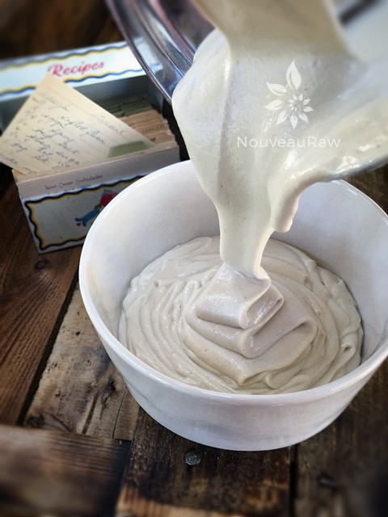
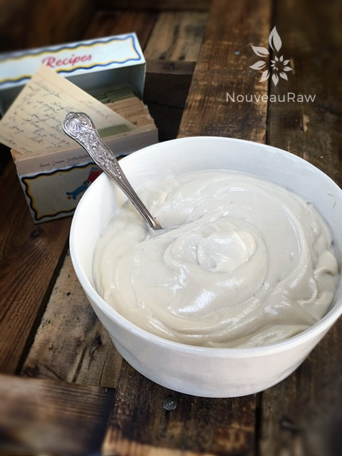

Vanilla Frosting

~ raw, vegan, gluten-free ~
This simple cashew cream frosting is based in cashews, maple syrup, coconut oil and vanilla. Super rich yet healthy, and perfect slathered on quick loaves of bread, cupcakes and more.
My site is all about sharing and teaching you all the information and experience that I have gained while playing in the kitchen over the years. So, I feel it is important to share with you why I use the ingredients that I do. That way you will start to understand how they work in raw recipes which will spark your own creations to come into existence.
Why I use certain ingredients
There are many reasons as to why I use cashews in recipes like this. First being… I wanted to create a dairy-free frosting. Secondly, soaked cashews swell, giving a bit more volume for the money and it softens them which is vital when creating a creamy texture.
My go-to sweetener for frosting is maple syrup. It is more alkalizing for the body than most other liquid sweeteners. It doesn’t impart a strong flavor nor will it affect the white coloring of the frosting. You can use maple syrup, coconut syrup, or any other liquid sweetener that you like to use.
To balance out the flavors, I always add a dash of good quality vanilla. The role of vanilla in sweet goods is like the role of salt on the savory side: it enhances all the other flavors in the recipe. You can use vanilla bean (seeds only), powdered vanilla or vanilla paste.
The reason that I add coconut oil is because it is a healthy fat but also gives the frosting the overall body. And lastly, salt. I use sea salt in just about all of my sweet desserts. It elevates the sweet level. All of these ingredients play well together and create an ultra silky frosting that will bring honor to any sweet dessert.

This type of frosting is great to use when frosting your cake when ready to eat or a few hours prior. I wouldn’t classify it as a type of frosting that is ideal for covering a whole cake; sides and all. If the room temp were to get too warm, it might slide. Keep the frosted treats chilled, if not serving immediately. I hope you enjoy this recipe. Please be sure to leave a comment below. Blessings, amie sue
yields 2 cups
- 1 1/2 cups raw cashews, soaked 2 hours
- 1/4 – 1/2 cup water
- 2 Tbsp maple syrup
- 3 Tbsp raw cold pressed coconut oil
- 1 Tbsp vanilla
- 1/4 tsp Himalayan pink salt
Preparation:
- After soaking the cashew, drain and discard the soak water. Add to a high-speed blender, along with water, maple syrup, coconut oil, vanilla, and salt. Blend until smooth, and no grit is detected when you rub some frosting between your fingers.
- Start by adding just 1/4 cup of water and see if more is needed. The longer you soak the cashews, the less water you will need add.
- You can also add more water if you want to drizzle this frosting over desserts.
- Place in fridge to achieve a thicker consistency and spread on cake when you’re ready to serve.
Additional Cake Tips:
- How to frost a cake. Click here.
- How to slice a cake. Click here.
- How much frosting is needed for a cake? Click here.


© AmieSue.com